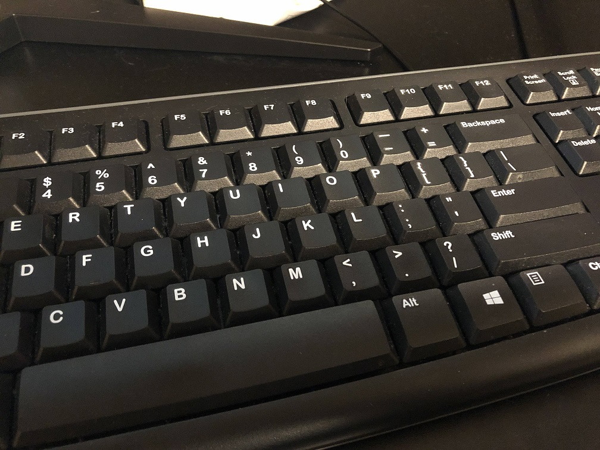
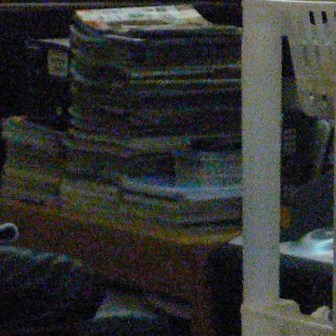
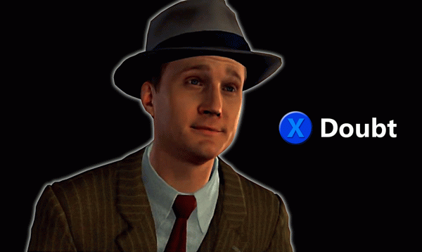
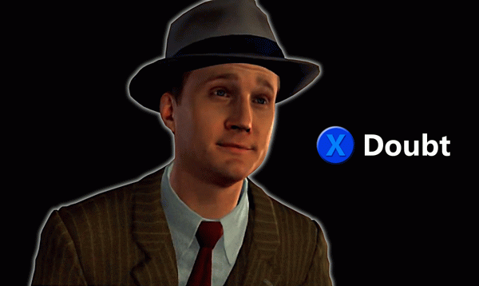
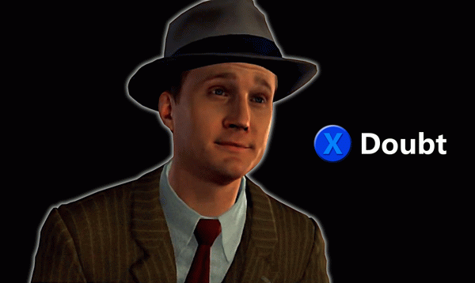

PSA: The Semi-Scam
December 8th, 2020
I've been meaning to write this PSA for a while now, because sometimes understanding how utterly malicious and controlled non-political propaganda is can help us better understand political propaganda. The above is a "helpful article written by a friend of yours," from IGN. Okay, I'm not actually quoting them, because this is an advertisement for "4k gaming monitors," despite high-resolution gaming on an LCD screen being a complete oxymoron. To explain what I mean by that, take a look at this image below.
 The size of each square is 10x10 pixels. See how you can clearly see the square, without problem. Now, scroll up and down this webpage, preferably using the scrollbar if you are on PC. First try scrolling slowly, then speed things up, and go faster and faster. What you will notice is that the checkerboard pattern starts to look horrifically awful. What you personally see is somewhat dependent on you, but everyone sees some combination of blurryness and flickering, and the end result is intolerable for most people. Depending on your LCD monitor, you might even see the image appear to turn a different colour.
For a more extreme example, this is that same checkerboard pattern, only the squares are 2x2 pixels in size.
The reason that you are seeing this is because LCD screens have something called "sample and hold" blur. Unlike the good old fashioned CRT monitors, LCD screens display an image for the full 1/60th of a second, or whatever corresponds to their refresh rates. There are two basic theories for why this results in such terrible motion blur. The first is that your eye is moving continuously to track a specific spot on the screen. Unlike real life, what happens is that the spot your eye is tracking snaps to a new position, then stays perfectly still, causing your eye to "skip over" the image, essentially blurring it. The other is that your brain can't make sense of an image seeming to accelerate infinitely fast, before coming to a complete stop for 1/60th of a second, before accelerating to the new position infinitely quick again. Due to this, many people get serious eye strain and headaches, and nobody in the world can actually tell what's going on with the picture.
You can try that yourself just by reading this text while scrolling up and down. What's the fastest scroll speed you can read the text at? I bet it's not particularly fast.
The above is used to test digital cameras for aliasing, but we can use it here for our motion blur test, since it gives much more pleasing results than the other images. If you scroll up and down while you look at this picture in the top right corner, it's just the same horribleness. Well, compression took away details in the absolute top right, shift your focus in a little. However, if you look at the bottom left, most people can see the image simply as very blurry in motion, and it's far more pleasant to look at that then the upper right corner, despite all sections of this image being the same resolution.
For things which do not have motion, a high resolution LCD monitor is great. Anyone editing pictures, doing graphic design, or even just general day to day browsing of the web can all benefit to some extent from a higher resolution monitor, especially if that monitor has good colour accuracy at all viewing angles. However, unless the LCD is displaying the exact same image over and over again for many frames in a row, or an image that is moving exceedingly slowly, you are going to have effectively a drastically lower resolution image on your hands.
In fact, we can even quantify the blurry awfulness. If you have an LCD monitor, the effective resolution you will get for an object that travels across the entire screen in a single second, is proportional horizontally to the framerate, and vertically whatever resolution that corresponds to. If that sounds too complicated, let me give you an example. A 30 Hz "4k" monitor has a maximum resolution of 3840x2160 for still images. For images that travel across the screen horizontally at a 1s rate, the effective resolution is... 30x17.
Yes, you read that correctly. 30x17 resolution.
If you bump that monitor all the way up to a blistering 120Hz, you get a still image resolution of 3840x2160, and for images traveling across the screen at a rate of 1s, the effective resolution is... 120x68.
To show you what that means in practice. Here's a 1280x720p image of Crysis.
The size of each square is 10x10 pixels. See how you can clearly see the square, without problem. Now, scroll up and down this webpage, preferably using the scrollbar if you are on PC. First try scrolling slowly, then speed things up, and go faster and faster. What you will notice is that the checkerboard pattern starts to look horrifically awful. What you personally see is somewhat dependent on you, but everyone sees some combination of blurryness and flickering, and the end result is intolerable for most people. Depending on your LCD monitor, you might even see the image appear to turn a different colour.
For a more extreme example, this is that same checkerboard pattern, only the squares are 2x2 pixels in size.
The reason that you are seeing this is because LCD screens have something called "sample and hold" blur. Unlike the good old fashioned CRT monitors, LCD screens display an image for the full 1/60th of a second, or whatever corresponds to their refresh rates. There are two basic theories for why this results in such terrible motion blur. The first is that your eye is moving continuously to track a specific spot on the screen. Unlike real life, what happens is that the spot your eye is tracking snaps to a new position, then stays perfectly still, causing your eye to "skip over" the image, essentially blurring it. The other is that your brain can't make sense of an image seeming to accelerate infinitely fast, before coming to a complete stop for 1/60th of a second, before accelerating to the new position infinitely quick again. Due to this, many people get serious eye strain and headaches, and nobody in the world can actually tell what's going on with the picture.
You can try that yourself just by reading this text while scrolling up and down. What's the fastest scroll speed you can read the text at? I bet it's not particularly fast.
The above is used to test digital cameras for aliasing, but we can use it here for our motion blur test, since it gives much more pleasing results than the other images. If you scroll up and down while you look at this picture in the top right corner, it's just the same horribleness. Well, compression took away details in the absolute top right, shift your focus in a little. However, if you look at the bottom left, most people can see the image simply as very blurry in motion, and it's far more pleasant to look at that then the upper right corner, despite all sections of this image being the same resolution.
For things which do not have motion, a high resolution LCD monitor is great. Anyone editing pictures, doing graphic design, or even just general day to day browsing of the web can all benefit to some extent from a higher resolution monitor, especially if that monitor has good colour accuracy at all viewing angles. However, unless the LCD is displaying the exact same image over and over again for many frames in a row, or an image that is moving exceedingly slowly, you are going to have effectively a drastically lower resolution image on your hands.
In fact, we can even quantify the blurry awfulness. If you have an LCD monitor, the effective resolution you will get for an object that travels across the entire screen in a single second, is proportional horizontally to the framerate, and vertically whatever resolution that corresponds to. If that sounds too complicated, let me give you an example. A 30 Hz "4k" monitor has a maximum resolution of 3840x2160 for still images. For images that travel across the screen horizontally at a 1s rate, the effective resolution is... 30x17.
Yes, you read that correctly. 30x17 resolution.
If you bump that monitor all the way up to a blistering 120Hz, you get a still image resolution of 3840x2160, and for images traveling across the screen at a rate of 1s, the effective resolution is... 120x68.
To show you what that means in practice. Here's a 1280x720p image of Crysis.
 You might be thinking, that looks nice, but it'd look even better in 3840x2160! Well, if you rendered it at 3840x2160 and then turned the camera around hard at 60fps, this is what your brain sees.
You might be thinking, that looks nice, but it'd look even better in 3840x2160! Well, if you rendered it at 3840x2160 and then turned the camera around hard at 60fps, this is what your brain sees.
What a beautiful image!
If instead of buying a useless monitor (for gaming), you instead got a 1080p monitor with 240 Hz refresh rate, and the hardware to run Crysis at 240 fps, which actually even in 2020 doesn't exist because that game, for all it's praise, was made by geniuses with retard-tier priorities, what your brain would see is this.
At least I can tell what I'm looking at, kind of...
Of course, unlike such a low resolution monitor, the way you get there is essentially by smearing a thick layer of vaseline all over the screen, not making a screen with such a low resolution from the outset, but effectively it's the same. Doing the math on that, that's going from 8,294,400 pixels down to... 8,160. Literally less than 0.1% the amount of pixels. If you wanted a "4k" monitor to continue to look like a "4k" monitor when things are moving across the screen at a rate of 1 screenWidth/s, you would need a refresh rate of 4000Hz.
But hey, don't take my word for it. Here's a video explaining this exact effect.
Blurbusters is a labour of love website created by some Canadian guy who breaks down this exact phenomenon. Here's a page where he gets to test a 480Hz monitor, and finds vastly superior image quality at 960x540p resolution at 480Hz over 1920x1080p resolution at 240Hz, for this exact reason.
This also partially explains why so many people think that old video games look just as good as new ones. Namely, when actually playing them you aren't experiencing a graphical upgrade. Here's Wind Waker, in all its 640x480 glory.
Now here's that exact same shot shrunk down to 60x45 and then blown up again.
Not exactly gorgeous, but you can't move the camera quite as fast as on a PC First Person Shooter. Even if you whip the camera around harder than the game will let you, you can still roughly make out what's going on, as opposed to a game like Crysis, which loves to shove tiny little details everywhere that get smeared across your brain like nobodies business.
60x45 for Wind Waker versus 64x36 for Crysis.
Games that have very simple "bad" graphics tend to actually look better in motion than games that have tons of high contrast little details, because those look like shit at the low resolution an LCD will display them at in motion. Actually I want to expand on this, since this has been pissing me off forever. Go and look at the 640x480p shot of Wind Waker. Look at how many things are groups of pixels far larger than even 10 or twenty pixels in size. Link's hair, his clothes, his boots, the green grass, the blue water, the rocks, the brown houses in the distance, and even there the relatively lighter roofs versus the darker bottoms. The palm tree bases + tops. It's not as painful for your brain when the LCD induces blur, because even in a 120x90 resolution image, you can still tell what's going on.
As a result of this, the image is extremely pleasing, and not visually confusing. This is nice as a still image, but absolutely crucial in motion.
But the purpose of the media is to gaslight you into thinking that Crysis was a beautiful game, with "muh graphics" despite looking beyond terrible when you actually played it. And since there is so much money in gaslighting you, many people are fooled into thinking this is true. And since a screenshot of a game is what sells the game, the publishers give zero fucks about your actual end user experience. Crysis looks good in screenshots, therefore it looks good, and you must have a mental illness if you think it looks bad when you do something as pedestrian as actually play the game.
Whad'ya mean, goy?
Here's another video explaining why, in the year 2020, we still have a small section of Gamers playing games on CRT monitors. Although it should be noted that they favour CRT's not just for the vastly superior handling of motion, but also due to the lower input lag, and far better display of low resolution images.
You don't need to actually watch that video, because this isn't really an article about LCD's vs CRT's, it's about the image at the top of the page. But before I get to that, let me bring up another Semi-Scam that I see constantly, the Megapixel Wars.
Bugmen cooming right now
Dear god, the Megapixel Wars. The best example of fleecing the average consumer whilst giving them outright negative value. For those who don't know, the Megapixel Wars is the derisive term given to camera manufacturers detrimentally increasing the amount of photocells on their sensors, lying through implication to the unknowledeable consumer that their camera is therefore better. This started in the early 2000's amongst DSLR's from Canon, Nokia, and the like. Then it spread to shitty point and click cameras. Then, starting in about ~2010 or so, Smartphone Manufacturers got in on the grift.
The premise is quite simple. The way a digital camera works is that they have a sensor of a certain size, made up of a certain number of photocells, which directly translate into the pixel count of the final image. So if you want to take pictures at 640x480p, you need 307,200 pixels/photocells, or a 0.3 MegaPixel, or MP sensor. Cramming more photocells together has the obvious benefit of improving the resolution of the final image, and as long as we have the overall image quality to use that increased resolution, no harm no foul.
Unfortunately, as we make the photocells smaller we get a noisier image, and we require more light or a lower shutter speed (longer exposure) to take the same image, which might not always be possible. On top of that, eventually, no matter how good our lens is, in terms of size and glass quality, nor how big our sensor is (allowing us to put more photocells in there at the same size), we will reach a point where increasing the sensor resolution has no positive effect. In fact, apparently it will even have a slight negative effect. I don't know if that's because smaller photocells are a less efficient use of the sensor (you need additional space for circuitry), or what have you, but the for the same level of technology, the sensitivity of the sensor goes down as the photocells become smaller.
To quote from Common Lands Camera Engineering:
TDC_ARTICLE_START
Two direct implications of building a camera with too many megapixels are:
Decreased sensor sensitivity
Increased image noise
Both of these directly lower the low-light performance of a camera system. This is one of the main reasons why security and surveillance cameras typically have lower resolution than cellphones, as ~8MP-10MP is the maximum overall system performance which can be achieved in 2020 with a camera Bill of Materials under $500 at 100kpcs/yr.
TDC_ARTICLE_STOP
THE NOISE/RESOLUTION TRADEOFF ------------------
To explain further what he means by that, let me explain why you want to have a camera that is both high resolution, as well as high contrast/low noise. To explain what the difference is, here's some pretty pictures.
Low noise, good colour gradients, and a sharp image
This is an image captured by a camera that takes both high resolution images, and low noise/high contrast images. Or at least, high enough resolution/low enough noise for our purposes, displayed on a webpage. What that means is that each individual pixel has a very accurate colour, and we have a lot of them. Having a lot of pixels is more important than having low noise when the things we are taking pictures of are already very high contrast. This will let us have very sharp lines between big things, at the expense of fine details inside of any particular image. Below are some shots illustrating this.
The top image shows the problem of noise, while the bottom shows the problem of low res, but with very good contrast/low noise. I exaggerated the low res image, trying to simulate a camera with excellently low noise, but a low resolution sensor, and I may have overdone it. In contrast, no pun intended, the top left image simulates a camera with a very high resolution, but with bad noise problems.
Subject matter and photography conditions are extremely important. This photo, like many landscape shots, favours a tradoff for higher res at the expense of more noise, as long as the noise doesn't become so overpowering that we . There is a naturally high contrast between the mountain and the sky in this image, so a sharp line between them looks excellent, and we can put up with a little noise for that sharpness.
But of course, it's an incredibly low resolution image. What I want to get across to you is that resolution has rapidly diminishing marginal returns. To show you that, here's an image I took of my keyboard in this brightly lit room. This is theoretically a time when a sensor that trades noise/contrast for resolution would be at close to max performance.
Downsampled from 4,032x3,024 to 1,008x756
Did you know that this picture was actually ~4,000 x 3,000 resolution on my phone? Then it got sampled down to the 1,008x756 resolution it is now, which should theoretically still look quite sharp. And in fact, it does look quite sharp, even at 1/16th the resolution. In fact, it looks pretty much just as sharp as the original image, and you'll see why in a second.
This is a crop of the original 4,032x3,024 image, so we can see individual pixels. I would like to stress, this is not a crop of the downsampled image, this is the original, in all its 896x673 glory. Every pixel has been preserved.
Every pixel preserved
So the question is, are we really getting our money's worth for all those pixels? Considering how muddy and clearly noisy the resultant image is, the answer is a clear no, but I want to show you just how far we really are from the resolution that Apple pretends your pictures are. To do that, I'm going to downsample this cropped image to 1/4th the resolution.
448x338
No matter how many times I flip back and forth, I can't see any difference.
224x169
What you see above is that same image shrunk down to 224x169 resolution, and then blown back up again. Finally we can see a clear and obvious difference, indicating that this phone is at least capable of capturing details at a resolution somewhere between 1/4 and 1/16th the actual sensor resolution. And even at this resolution, the image still looks perfectly good. I am not struggling to make out what I am looking at, and the downsampling has helped remove some of the noise, although even here we can still see the nastyness of the noise in the image, it's just not as bad.
What this means is that the actual effective resolution of the iPhone 8 camera system with its "12 MP camera," is more like 3 MP's in the ideal case scenario, good for taking just above 1920x1080 shots. That is what the actual resolution of the iPhone 8 camera system is, but even that's misleading, because this is an ideal setup, with as stable a hold as there will ever be, a well lit subject, and we still see noise crawling all over the picture, especially the highest resolution version.
You can see the resolution/noise tradeoff in the rest of the image besides the characters. The rest of the keyboard looks like this weird, muddy, splotchy, gross colour, that at first glance superficially looks like imperfections in the surface, but is ultimately just wrong. Because they sacrifice definition in fine contrast ostensibly for higher sharpness, but really just so they can put a higher MP number on the box, in order to fool the rubes into buying their phone. As I just showed, the lens blurs the image down to about 3MP or less anyway, and the rest of the image is dominated by noise.
After all, this image I showed you earlier, of the full keyboard, is 1/16th the resolution of the camera, at just 1,008x756, and it looks plenty sharp. Ignore the weirdness of some characters being lit up, there is a film that sometimes catche the light.
You only need a 0.76 MP sensor to take this image.
In reality, for the vast majority of pictures you take, you would be far better served with a drastically lower resolution phone even far less than 1/4 the resolution, such as a 1/16th resolution 1,008x756 sensor, because a sensor designed with that lower resolution would perform far better at reducing noise, of extreme importance when taking low light pictures with moving subject matter, or an unstabilized phone. And this would enable you to take pictures faster. Both noise and subject matter blur are the limiting factors in the majority of smartphone user shots.
So finally, to explain why there is that tradeoff physically, the long and short of it is as follows. For the same size sensor, which is tiny on a phone, you can choose to pack, say, 4x more photocells in. Photocells corresponding to pixels in the final image, and I'll just call them sensor-pixels, or just pixels from here on. However, in order to cram those sensor-pixels in, you need to shrink them down to 1/4 the size.
The way the photocells work is that when photons hit them they get turned into an electron. At the end of the exposure, we simply count up how many electrons are in each photocell, and there's the brightness. That's a bit of a simplification, and for a black and white camera, but is basically how the camera works.
Unfortunately, photons are discrete events, and over time, we can expect one photocell to get a different number of photons than the next, through nothing other than sheer luck. This leads to what is called "noise," in the image, which can be thought of as the photons that streamed into the camera sensor not being perfectly representative of the actual scene. One shot one pixel might be too bright, the next, too dark. This is exacerbated by quick shutter speeds and low light conditions.
----------------------------------- PHOTON/LIGHT EXPLANATION INTERLUDE
Detailed explanation of this effect can be found here.
First, light is made up of discrete photons. In high light conditions, such as midday, over a large fraction of a second, we can expect to get thousands or even millions of photons for each receptor. If we're taking a picture in very low light conditions, such as at night outside, and over a very short duration, we now have a situation where, if our photocells are very small, we might have meaningful differences in the light one saw, that are not truly "in the scene" so to speak. As an extreme example, on a moonlit night, for a 1/1000th exposure, and an absurdly high resolution tiny sensor, we might have a situation where we many of the photocells did not get hit by a single photon, whereas others got hit by multiple photons. If this is seeming a little to abstract, think of this picture.
Imagine this is a moonlit night with ultra low light
This picture essentially represents what the ideal perfect camera could possibly record. However, actual cameras are quite a bit more limited, and tradeoffs must be made in terms of resolution/colourAccuracy/noise, as well as exposure decisions from the photographer.
------------------------------------ INTERLUDE OVER
While ultimately having an enormous sensor, for the same sensor resolution, is the best way to solve noise, that's not available to our tiny little phone camera. In that case, noise can be partly solved simply by downscaling the resultant image, and averaging out the noise.

Only, there's a problem. The way the photocells work is by storing electrons, but they can't store infinite electrons. If the photocell becomes "saturated," any additional light doesn't actually register. Worse, the number of photons (turned into electrons) that can be stored by a photocell is directly proportional to its square dimensions. A 4x smaller photocell can only store 1/4 the electrons. This causes unsolveable problems for the accuracy of any individual photocell, both with and without noise.
Let's take this to an extreme. If you shrunk a photocell down to a point where it could only hold a single photon, and was either on or off, then no matter how excellent the resolution, and even assuming not a single photon of noise, the resultant image would have every pixel either completely black, or completely white, with no inbetween. As a result, we lose massive amounts of information from the scene. If we keep the shutter open for longer, more pixels are completely white, and if we keep it open for a shorter amount of time, more pixels are completely black.
This image has no noise, but shows the contrast limitation
To quote from Radiant Vision Systems:
TDC_ARTICLE_START
So far, we’ve seen that larger pixels (greater pixel well depth) confer the following advantages for imaging quality:
Higher signal-to-noise ratio (more signal compared to the amount of noise)
Less impacted by shot noise
Because the maximum SNR is limited by the square root of the well size, in order for a measurement system to detect a 1% difference—such as 1% variation in luminance from one display pixel to the next—more than 10,000 electrons need to be captured by the sensor pixel. If the sensor pixel well reaches capacity before it holds 10,000-electrons, then the only differences we can detect from display pixel to display pixel must be greater than 1%.
TDC_ARTICLE_STOP
BTW This is why astronomy cameras* tend to have low sensor resolution relative to sensor size. When you're taking pictures of something as extremely high contrast as stars in space, with the stars themselves ranging in brightness enormously, in order to see variations in the brightest star and the dimmest ones we need to be able to actually capture those differences. Again, think of this as like the resolution of an individual pixel, as opposed to the image overall.
* Also true for security cameras. Also true for consumer cameras such as the Sony A7S3, which is designed for low light photography and videography.
But where this gets really bad is with noise, like the image two above. If we have a normal "well depth," of, say, 10,000, then your camera sees a single stray photon as "this is a pixel that is 1/1000th as bright as maximum." If we have this absurd well depth of 1, then any random stray photon is seen by your camera as "this pixel is the brightest pixel known to man." If we increased well depth to 100,000, then a single stray photon is seen as just 1/100,000 full brightness. Since we throw out the extra light that hits a saturated photocell, with a larger well depth, we have a much better opportunity to have any given exposure show all of the information in the scene. We would like the brightest parts of the scene to saturate their respective photocells, while the darkest parts of the scene still have some details in them.
And larger photocells can capture light proportionally quicker. What this means is that the high resolution/small photocell sensor and the low resolution/large photocell require the same time exposure at the same settings. However, our low resolution sensor won't just capture less detail, due to the larger "jumps" from one additional photon, but has a lower chance of having an accurate colour/light for any individual pixel. What I mean by that is, if we went all the way down to a well size of just 1 photon, many photocells which are of average brightness would get either no photons, or one, or two, or even many more. If they got two, then the second gets thrown away, and that information is deleted from our image, never to be recovered. With a different design with a well size of 4 photons, any photocell exposed to average brightness has a much better chance of being hit by 2-3 photons. Yes, some will still get 0, and some will still get more than 4, but our odds are lower of losing information. This process continues as we increase our "well depth".
And under-exposure doesn't help, in case you were wondering. Because under-exposure simply increases the liklihood of some bright area getting no photons, and increases the importance of every single photon, thus actually increasing noise. So we can't solve the problem of noise-induced over-saturation of any individual photocell by lowering the exposure.
And this gets far worse when we add in colours. Because we don't just have the problem with a black and white camera becoming oversaturated with light, we have each individual colour channel getting potentially oversaturated, thus changing the actual colour of the resultant pixel asymettrically.
Sampling this image down doesn't solve this problem, the correct information is gone.
Even more than noise-induced oversaturation, photons have colour. We can easily just get way too much green one pixel, then way to much blue the next, and over the millions of pixels in our 12 MP sensor, it's quite easy to get massively wrong areas at irregular intervals. In fact, we would expect that.
Mathematically the formula is that an increase in sensor resolution corresponds to a square root increase in noise, even after sampling down to the previous resolution. So if we take a camera sensor designed to shoot 640x480 images and pack in 4x the amount of sensors, those sensors would be, on average, twice as noisy. Going the other way, a 1/4 decrease in resolution leads to a 1/2 decrease in noise, again, even after factoring in sampling down.
And in many images, such as the above, we are limited purely by noise. Such conditions are most obvious when in low-light conditions, especially when the shutter speed must be high. A low resolution/low noise sensor design can perform much better in those conditions than vice versa. This is why there is absolutely zero reason to ever give a phone a higher resolution sensor than the quality of image the lens can provide. You are negatively affecting the quality of the image.
Going by our iPhone 8, with its, at best, 3MP of actual image quality provided by the lens, with great lighting, me trying to hold the camera as steadily as a human can, and a still subject, we still see a 4x over-resolutioned camera, in the most ambitious estimations. I would shrink the camera down to 1,008x756 resolution, since I don't think we can actually make use of the increased resolutions in 99% of realistic photos. As in, imperfect lighting, photographers hands shaking/body moving, subject matter moving, etcetera. If we shrunk this down appropriately, we would get, to make things simple, an 4x less noisy camera, and as excellent as such a small camera could be for low-light shooting.
---------------------
In the real world this translates into Sony making both the full frame A7R4 camera, with a 61 MP sensor resolution, whilst also making the full frame A7S3 camera, with just 12 MP sensor resolution. Why did they make the latter? Isn't low resolution just a pure negative, with no positive upside???? Well, because of low-light performance. Because having larger photocells makes them more accurate above and beyond averaging, so you get a better picture with the 12MP sensor than the 61MP sensor, even if you downsampled from 61MP to 12MP. If you are taking landscape photographs in pristine light conditions, with perfectly still subject matter, and the godlike lenses of a top tier actual camera, then sure, get the higher MP sensor. For everything else, and especially low-light video, go with the low resolution, high low-light performance design.
But then again, smartphone users definitely spend all of their time taking pristine set up shots of still subject matter, like weddings and landscapes, and only with the best of lighting. There's no such thing as a low-light shots of moving subjects for smartphone users. That's definitely not a realisitic use case. The only time a smartphone user has ever taken a picture with their smartphone has been a landscape shot, with the phone on a stand, in the middle of a hot summers day with a perfectly clear sky, backed up by a team of professional cinematographers with 1 GW artificial lights beaming downrange just in case.
There's no such thing as taking photographs at a dimly lit concert while waving your phone around. There's no such thing as taking a selfie of yourself outside the club at 3AM in the morning while drunk. That never happens.
 Let's get back to this picture, shall we?
Let's get back to this picture, shall we?
Imagine this is a moonlit night with ultra low light
Again, this is a photon simulation, not a series of real exposures, but I want to use this to give you a more extreme resolution/noise tradeoff example.
If our conditions are like the first few images, we can clearly see that higher resolution does nothing for us. If we took 2x2 cells of pixels, and averaged them together, we would have an image that is 1/4 the resolution, but of pretty much equal image quality, and still garbage. For the first three or even four images, we could even go much further than 1/4 resolution, since the higher resolution is wasted.
A camera with the same size sensor, but 1/4 the number of photocells, each with 4x the area, needs an exposure time of just 1/4 a different camera with the same size sensor, but 4x more photocells at 1/4 the size each. At least in order for each cell to have the same amount of noise. On top of that, each photocell is more accurate for the same exposure time, which is why low-light cameras are designed to have lower sensor resolutions/larger photocells.
To give you an extreme version of this using the above image, think of two similar cameras, both with the same lenses and sensor size, but one has a 1/16th resolution sensor, with the photocells at 16x the size of the other. You can think of that camera as being able to, for the same ambient light and exposure time, take an image one more to the right of the other camera, but at 1/16th the resolution. At the highest ambient light, maybe the resolution matters (if you aren't limited by lenses). But at the lower ambient light, well, which would you prefer?
High Res/High Noise Sensor
Ultra Low Res/Low Noise Sensor, 1/16th the MP's
It's hard to believe that the second picture is 1/16th the resolution of the first, isn't it? It certainly doesn't subjectively feel that way, but it is. That's the importance of not having a horrible noisy image. It doesn't matter how many pixels you've got, if they're all wrong.
In reality, the effect isn't quite as pronounced, but still strong, and shows a very important point. There is no point in having a sensor resolution higher than the noise of the image. And as a corollorary, combatting that noise can be, especially in high noise situations (low light, high shutter speed, small sensor), far more important than the resolution of the image.
Nothing can overcome having a small sensor, and capturing a small amount of light. There is after all, a reason that owls and other animals have gigantic eyes. But not crippling your sensor with smaller, and less responsive photocells is one way to help solve this problem. That is a big part of the reason why the security cameras listed above never go above 8MP, which is already pushing it.
And yes, if you simply downsample from a higher MP image to a lower one, you can get rid of much of the noise, but then what's the point? And remember, 4x the resolution, 2x the noise even after sampling back down. So we got less than nothing for the increased sensor resolution.
As another real world example of this tradeoff, in 2002, Canon came out with their top of the line, full frame, EOS-1Ds camera, sporting a then unheard of 4,064x2,704 resolution, good for 11.1 MP. Then, two years later, in 2004, they came out with its successor, the EOS-1D Mark II, which had an 8.2MP sensor, because the first version had garbage low light quality because the sensor resolution was a marketing gimmick designed to increase sales at the expense of actual image quality. The professional photographers who the camera was marketed towards complained at the low quality images until Canon gave in and matched the camera with an appropriate sensor.
But as bad as it was when attached to DSLR's, it's a million times stupider with Smartphones, and in every way possible. The downsides of smaller photocells (to get the higher sensor resolution) can be mitigated much more reliably by professional photographers. First, professional photographers can either tolerate or avoid longer shutter speeds, because they often have bright lights, well set up subject matter which isn't moving, and stands or other equipment to settle down the camera. Smartphone users have the amazing stabilizing technology of their hand and arm, often want to take ultra low light photographs without artificial lights, and are often taking pictures of quick moving subject matter.
The original iPhone had a 2MP sensor, famous for poor low-light photographs. For explanation, see above.
On top of that, smartphones can't possibly justify the comparably enormous sensor sizes of DSLR's, nor the size or quality of DSLR lenses. After all, it's a phone. There just isn't room. Therefore, according to simple laws of physics, 1/10th the sensor size, 1/10th the sensor resolution. Or in the case of the original iPhone sensor size, 1/100th - 1/50th the size sensor, 1/100th - 1/50th the sensor resolution. Considering that modern DSLR sensor resolutions top out at ~60 MP's, and we're looking at sensor resolutions of about 0.5-1.5 MegaPixels for the size cameras that we actually get. The absurdly over-resolutioned 12 MP camera on my iPhone 8 I can confirm, gives absolutely garbage pictures in even medium-low light, medium-low movement scenarios. And I do mean "just delete that image," level of badness.
The iPhone 8 has 1/40th the sensor size of the Sony A7S3, but the same 12MP sensor res...
While there's no matching the low light performance of professional DSLR's, minimizing noise or unbearably long shutter speeds would thus require even lower sensor resolutions ranging from about 960x540, or about 0.5MP, to, only for the absolute biggest phone cameras, maybe all the way up to 1920x1080, or about 2MP. But, of course, the use case for the user actually wants better low light performance, as laid out earlier, so shift those numbers down a notch.
But wait, it gets dumber, because who the hell keeps the lens on their phone as pristinely clean as a professional photographer? If you're like 99.9% of the population, your phone lens probably has smudge marks all over it from your finger, and a fine mist of dirt irregularly spread over it. So even in high light, low shutter speed situations, who cares about a resolution higher than "yep, I can tell what I'm looking at," since your lens isn't giving you better than that anyway.
Finally, the larger the resolution of the pictures/videos that are captured by this camera, the more space they take up on your phone. A camera that takes 0.5MP photographs is using 1/20th the storage space of a camera taking 10MP photographs. Add it all up, and you'd expect the maximum resolution of any phone camera to be the good old fashioned 1920x1080, or 2MP. Even that would be a little cheeky, since 99% of use cases would be better served with a lower resolution sensor, with better low-light, high-shutter speed performance. But that would at least be in the realm of justifiable.
Instead, we have Samsung coming out with a new phone that has, I shit you not, 108 MEGAPIXELS.
 Did you know that the absolute top of the line modern DLSR's from Nokia, Canon, Sony, or whomever top out at 60 MP? Apparently the tiny, shitty lens and sensor on Samsung's phone is capable of taking higher quality images.

And even if the phone was capable of taking images of a quality matching the resolution, the only possible reason you could want an image at such a resolution is if you were going to blow it up to some enormous size. I'm talking billboard sized, but people have to be getting up close and personal as well. Just about the only scenario I could envision this happening is some art gallery, so there is absolutely zero reason to have an image captured at that resolution unless you think that your random photos that you take without proper lighting or setup are going to one day make their way into an art gallery.
Did you know that the absolute top of the line modern DLSR's from Nokia, Canon, Sony, or whomever top out at 60 MP? Apparently the tiny, shitty lens and sensor on Samsung's phone is capable of taking higher quality images.

And even if the phone was capable of taking images of a quality matching the resolution, the only possible reason you could want an image at such a resolution is if you were going to blow it up to some enormous size. I'm talking billboard sized, but people have to be getting up close and personal as well. Just about the only scenario I could envision this happening is some art gallery, so there is absolutely zero reason to have an image captured at that resolution unless you think that your random photos that you take without proper lighting or setup are going to one day make their way into an art gallery.

So then they put up my blurry photo of Sir Fluffy playing with yarn.
Again, that's even assuming that the lens, sensor, and subject matter made those pixels worthwhile, unlike the actual noisy horrorshow they would actually be.
Noise is the problem, not resolution
But wait, it gets dumber.
You see, since it is so beyond pointless to have an image at 108 MP resolution, which works out to an effective resolution of 12032x9024, what they do is just immediately sample four photocells together to get a new image that is "just" 27MP, or 6016x4512. Which is still pointless BTW, especially considering how noisy and bad that image is going to look. But alls of which begs the question of, why have the extra photocells in the first place? After all, simply not having them allows you to do the same thing, but more accurately, since you are already sampling the extra photons simply by having one photocell 1/4 the size. And hey, while you're at it, we don't need 27MPs either, so why not drop the resolution down to a still somewhat absurd 3008x2256, and call it a day? Fuck it, why not go all the way down to 1,504x1,128, and then build literally 1/64th the number of photocells, but 64x larger, so you get great low light performance which is what people actually need on their shitty phone videos, at least the ones you take outside the club while you're drunk at 3AM.
And oh BTW, at that resolution YOU ARE STILL LIMITED BY THE QUALITY OF THE LENS, THE SIZE OF THE SENSOR, AND THE RETARDATION/DRUNKENNESS OF THE IDIOT HOLDING THE PHONE. And instagram shrinks that photo down to 500x500 and facebook shrinks it down to 1280x720 anyway. Oh and you get to take 64x more pictures for the same storage, and not piss off your relatives by sending them 108MP images that get shrunk down on their phones anyway.
 But is it really a facepalm if they can hoodwink regular everyday people into thinking it's good?
But wait, because I haven't even gotten to the dumbest part yet. If your phone camera took images in their raw format, you'd get an image that is 24 bits per pixel, or 3 bytes. At 10 MP's, that's a 30 MB picture. For the Samsung 108MP camera, that would be 324 MegaBytes per image. Since it would be retarded to store everybodies random cat pics at 30+MB's each, what they do is store that in a compressed file format. That doesn't necessarily mean a loss of data, since there is such thing as lossless compression. Unfortunately, the reason that lossy compression exists, is because it does more compression. So which do you think your phone does?
But is it really a facepalm if they can hoodwink regular everyday people into thinking it's good?
But wait, because I haven't even gotten to the dumbest part yet. If your phone camera took images in their raw format, you'd get an image that is 24 bits per pixel, or 3 bytes. At 10 MP's, that's a 30 MB picture. For the Samsung 108MP camera, that would be 324 MegaBytes per image. Since it would be retarded to store everybodies random cat pics at 30+MB's each, what they do is store that in a compressed file format. That doesn't necessarily mean a loss of data, since there is such thing as lossless compression. Unfortunately, the reason that lossy compression exists, is because it does more compression. So which do you think your phone does?
 Yes, that's right, it does lossy compression. Because the engineers have to make an overall good experience, and save you from the marketing department. That includes not having ginormous picture files with high noise in them that look bad anyway. Since all that extra sensor resolution captures is noise, there is no point to keeping the extra detail in the picture. So instead, they crank up the compression on the image, effectively turning a "high resolution" image into a low resolution image, while still technically being a high resolution image, since you can uncompress it to a higher resolution. In fact, often times compressed images look worse than the comparable low resolution losslessly compressed image, since you get nasty compression artifacts, that lower resolution just doesn't have.
Here's an example of the semi-scaminess of high resolution high compression, versus low resolution low compression. Both images are almost identical in file size (3,984 bytes versus 4,068 bytes), but the latter image is one quarter the resolution of the former.
I would say that the low res low compression image, while overall slightly blurrier, looks far superior to the noticeably artifact-y high res high compression image. And it's still lossy compressed, just not nearly as aggressively.
And I think I might agree that it's not that bad that your phone camera is actually shit-tier quality. I expect a tiny camera with a tiny sensor, tiny lens, presumably with fingerprints on it, hand stabilization technology, smudge marks on the lens, and a shot composed by me, a non-photographer, to look shitty. Giving these cameras actually appropriate sensor resolutions, like the aformentioned 1,008x756, or ~0.75MP, would increase their shutter speeds and low light performance/noise reduction. But even if they were less shitty, they'd still be shitty, because there's nothing you can do to inherently solve the problems that it's a camera on a goddamn smartphone.
I'm just mad that these charlatans have convinced people that there is something to be gained from going from one absurdly over-resolutioned phone camera to another absurdly over-resolutioned phone camera. If these people can fool just 10% of people into buying their phone for the utterly bullshit reason that it has an even more absurd mismatch between lens quality, sensor size, and sensor resolution, then this was all justified through the logic of "muh free-market." So remember that next time you hear some Cuckservative whining about "muh Socialism," or trying to explain how Capitalism provides the efficient distribution of resources, or some other bullshit.
Yes, that's right, it does lossy compression. Because the engineers have to make an overall good experience, and save you from the marketing department. That includes not having ginormous picture files with high noise in them that look bad anyway. Since all that extra sensor resolution captures is noise, there is no point to keeping the extra detail in the picture. So instead, they crank up the compression on the image, effectively turning a "high resolution" image into a low resolution image, while still technically being a high resolution image, since you can uncompress it to a higher resolution. In fact, often times compressed images look worse than the comparable low resolution losslessly compressed image, since you get nasty compression artifacts, that lower resolution just doesn't have.
Here's an example of the semi-scaminess of high resolution high compression, versus low resolution low compression. Both images are almost identical in file size (3,984 bytes versus 4,068 bytes), but the latter image is one quarter the resolution of the former.
I would say that the low res low compression image, while overall slightly blurrier, looks far superior to the noticeably artifact-y high res high compression image. And it's still lossy compressed, just not nearly as aggressively.
And I think I might agree that it's not that bad that your phone camera is actually shit-tier quality. I expect a tiny camera with a tiny sensor, tiny lens, presumably with fingerprints on it, hand stabilization technology, smudge marks on the lens, and a shot composed by me, a non-photographer, to look shitty. Giving these cameras actually appropriate sensor resolutions, like the aformentioned 1,008x756, or ~0.75MP, would increase their shutter speeds and low light performance/noise reduction. But even if they were less shitty, they'd still be shitty, because there's nothing you can do to inherently solve the problems that it's a camera on a goddamn smartphone.
I'm just mad that these charlatans have convinced people that there is something to be gained from going from one absurdly over-resolutioned phone camera to another absurdly over-resolutioned phone camera. If these people can fool just 10% of people into buying their phone for the utterly bullshit reason that it has an even more absurd mismatch between lens quality, sensor size, and sensor resolution, then this was all justified through the logic of "muh free-market." So remember that next time you hear some Cuckservative whining about "muh Socialism," or trying to explain how Capitalism provides the efficient distribution of resources, or some other bullshit.
Pictured: Consumerist Bullshit
But I guess the ultimate question is, how much money did I make explaining all this to you? Versus, how much money these liars have made by duping honest people into thinking that their phone camera is magically of actual camera quality.
Because ultimately these are semi-scams, because they do in fact give you the checkbox feature they promise. It's the implicit promise that's a lie. For the first, high resolution LCD monitors for gaming, yes, if you buy a 3840x2160 monitor, every frame rendered can be displayed up to 3840x2160, but if things have the slightest amount of motion, those extra pixels mean absolutely nothing. You would be better off with a 1080p monitor and higher framerates, once things are in motion. So the implicit promise of higher image quality is a lie. For the second, yes, they give you the MP sensor resolution that they promise on the box, but the implicit promise of higher image quality is a complete lie.
It's similar to when I was younger and saw a low end Graphics card on sale with a hugely disproportionate amount of memory. There was no engineering reason to pair such a large amount of memory with a low end GPU, but the goal was to fool low info consumers into thinking "hey, good cards have lots of memory, this must be a good card for cheap!"
Spending societies precious resources pointlessly. Yaaaaaay!
These semi-scams, or scam-lites, exist in order to transfer money from your bank account into their bank account. But more important than that, look at the faggots and whores who promote this shit. Sure, you never really get any tangible benefit to "gaming in 4k", but lots of hardware companies, from the monitor manufacturers, to GPU manfacturers make a whole lot of money off of you. Sure, don't get any benefit, in fact a negative benefit, from a phone camera with an absurdly high sensor resolution, but lots of people get to make money off of you. Sure, you don't get anything from a low-end video card with 4x the video memory it needs, but lots of people get to make money off of you. And the purpose of these propaganda pieces of "wow gaming in 4k is so great wowowowowow" is to gaslight you into thinking that these shills aren't just trying to make a buck off of you.
The reason why you have to travel to obscure websites in order to find the truth, is because those lies are making others money hand over fist.
Because in business, the truth is worth $0.00. But lies are worth billions.
Think of that when we get back to politics.
The size of each square is 10x10 pixels. See how you can clearly see the square, without problem. Now, scroll up and down this webpage, preferably using the scrollbar if you are on PC. First try scrolling slowly, then speed things up, and go faster and faster. What you will notice is that the checkerboard pattern starts to look horrifically awful. What you personally see is somewhat dependent on you, but everyone sees some combination of blurryness and flickering, and the end result is intolerable for most people. Depending on your LCD monitor, you might even see the image appear to turn a different colour.
For a more extreme example, this is that same checkerboard pattern, only the squares are 2x2 pixels in size.
The reason that you are seeing this is because LCD screens have something called "sample and hold" blur. Unlike the good old fashioned CRT monitors, LCD screens display an image for the full 1/60th of a second, or whatever corresponds to their refresh rates. There are two basic theories for why this results in such terrible motion blur. The first is that your eye is moving continuously to track a specific spot on the screen. Unlike real life, what happens is that the spot your eye is tracking snaps to a new position, then stays perfectly still, causing your eye to "skip over" the image, essentially blurring it. The other is that your brain can't make sense of an image seeming to accelerate infinitely fast, before coming to a complete stop for 1/60th of a second, before accelerating to the new position infinitely quick again. Due to this, many people get serious eye strain and headaches, and nobody in the world can actually tell what's going on with the picture.
You can try that yourself just by reading this text while scrolling up and down. What's the fastest scroll speed you can read the text at? I bet it's not particularly fast.
The above is used to test digital cameras for aliasing, but we can use it here for our motion blur test, since it gives much more pleasing results than the other images. If you scroll up and down while you look at this picture in the top right corner, it's just the same horribleness. Well, compression took away details in the absolute top right, shift your focus in a little. However, if you look at the bottom left, most people can see the image simply as very blurry in motion, and it's far more pleasant to look at that then the upper right corner, despite all sections of this image being the same resolution.
For things which do not have motion, a high resolution LCD monitor is great. Anyone editing pictures, doing graphic design, or even just general day to day browsing of the web can all benefit to some extent from a higher resolution monitor, especially if that monitor has good colour accuracy at all viewing angles. However, unless the LCD is displaying the exact same image over and over again for many frames in a row, or an image that is moving exceedingly slowly, you are going to have effectively a drastically lower resolution image on your hands.
In fact, we can even quantify the blurry awfulness. If you have an LCD monitor, the effective resolution you will get for an object that travels across the entire screen in a single second, is proportional horizontally to the framerate, and vertically whatever resolution that corresponds to. If that sounds too complicated, let me give you an example. A 30 Hz "4k" monitor has a maximum resolution of 3840x2160 for still images. For images that travel across the screen horizontally at a 1s rate, the effective resolution is... 30x17.
Yes, you read that correctly. 30x17 resolution.
If you bump that monitor all the way up to a blistering 120Hz, you get a still image resolution of 3840x2160, and for images traveling across the screen at a rate of 1s, the effective resolution is... 120x68.
To show you what that means in practice. Here's a 1280x720p image of Crysis.
You might be thinking, that looks nice, but it'd look even better in 3840x2160! Well, if you rendered it at 3840x2160 and then turned the camera around hard at 60fps, this is what your brain sees.
Let's get back to this picture, shall we?
Did you know that the absolute top of the line modern DLSR's from Nokia, Canon, Sony, or whomever top out at 60 MP? Apparently the tiny, shitty lens and sensor on Samsung's phone is capable of taking higher quality images.

And even if the phone was capable of taking images of a quality matching the resolution, the only possible reason you could want an image at such a resolution is if you were going to blow it up to some enormous size. I'm talking billboard sized, but people have to be getting up close and personal as well. Just about the only scenario I could envision this happening is some art gallery, so there is absolutely zero reason to have an image captured at that resolution unless you think that your random photos that you take without proper lighting or setup are going to one day make their way into an art gallery.
But is it really a facepalm if they can hoodwink regular everyday people into thinking it's good?
But wait, because I haven't even gotten to the dumbest part yet. If your phone camera took images in their raw format, you'd get an image that is 24 bits per pixel, or 3 bytes. At 10 MP's, that's a 30 MB picture. For the Samsung 108MP camera, that would be 324 MegaBytes per image. Since it would be retarded to store everybodies random cat pics at 30+MB's each, what they do is store that in a compressed file format. That doesn't necessarily mean a loss of data, since there is such thing as lossless compression. Unfortunately, the reason that lossy compression exists, is because it does more compression. So which do you think your phone does?
Yes, that's right, it does lossy compression. Because the engineers have to make an overall good experience, and save you from the marketing department. That includes not having ginormous picture files with high noise in them that look bad anyway. Since all that extra sensor resolution captures is noise, there is no point to keeping the extra detail in the picture. So instead, they crank up the compression on the image, effectively turning a "high resolution" image into a low resolution image, while still technically being a high resolution image, since you can uncompress it to a higher resolution. In fact, often times compressed images look worse than the comparable low resolution losslessly compressed image, since you get nasty compression artifacts, that lower resolution just doesn't have.
Here's an example of the semi-scaminess of high resolution high compression, versus low resolution low compression. Both images are almost identical in file size (3,984 bytes versus 4,068 bytes), but the latter image is one quarter the resolution of the former.
I would say that the low res low compression image, while overall slightly blurrier, looks far superior to the noticeably artifact-y high res high compression image. And it's still lossy compressed, just not nearly as aggressively.
And I think I might agree that it's not that bad that your phone camera is actually shit-tier quality. I expect a tiny camera with a tiny sensor, tiny lens, presumably with fingerprints on it, hand stabilization technology, smudge marks on the lens, and a shot composed by me, a non-photographer, to look shitty. Giving these cameras actually appropriate sensor resolutions, like the aformentioned 1,008x756, or ~0.75MP, would increase their shutter speeds and low light performance/noise reduction. But even if they were less shitty, they'd still be shitty, because there's nothing you can do to inherently solve the problems that it's a camera on a goddamn smartphone.
I'm just mad that these charlatans have convinced people that there is something to be gained from going from one absurdly over-resolutioned phone camera to another absurdly over-resolutioned phone camera. If these people can fool just 10% of people into buying their phone for the utterly bullshit reason that it has an even more absurd mismatch between lens quality, sensor size, and sensor resolution, then this was all justified through the logic of "muh free-market." So remember that next time you hear some Cuckservative whining about "muh Socialism," or trying to explain how Capitalism provides the efficient distribution of resources, or some other bullshit.